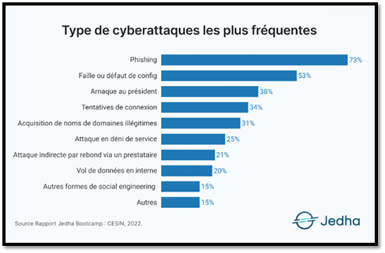
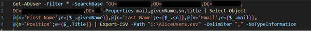
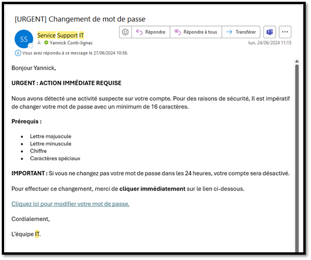

Au cours de mon alternance au sein du groupe Crescendo Restauration, j'ai été chargé de déployer une campagne de phishing pour la sensibilisation des utilisateurs.
Introduction :
Dans un contexte d’arrivée d’un nombre significatif de nouveaux utilisateurs au sein de l’entreprise et de l’arrivée des Jeux olympiques (JO) de 2024 en France, qui va créer une augmentation des cyberattaques. La sécurité informatique devient un enjeu majeur pour toutes les entreprises y compris dans le milieu de la restauration.
Durant mon alternance, J’ai donc pu proposer et mené une campagne de phishing, dans le but de sensibiliser les utilisateurs de l’entreprise (restaurants + siège social) aux risques de l’hameçonnage. Ce projet m’a permis de mettre en pratique mes compétences techniques et humaines d’aborder concrètement le sujet de la protection de données au sein de l’entreprise.
Contexte, Objectifs
Les nouveaux utilisateurs souvent jeunes et sans expérience découvrant le monde du travail ne sont pas toujours au courant de l’importance des données pour une entreprise et ont tendance à cliquer sans raison sur les liens qu’ils reçoivent. Les utilisateurs sont souvent très compétents dans leur domaine respectif, mais manque de vigilance et d’expérience en matière de cybersécurité.
Cependant, avec l’arrivée des Jeux olympiques, il va falloir être deux fois plus vigilants avec l’affluence que cela peut apporter à nos restaurants. Durant les derniers Jeux olympiques à Tokyo, il y a eu près de 450 millions de cyberattaques et pour les JO de Paris, il en serait prévu plus de 4 milliards. (4 milliards de cyberattaques en France : les menaces qui planent sur les JO de Paris) Ce qui est un nombre à prendre en compte, car les menaces seront plus présentes que jamais durant cette grosse période touristique et événementielle en France.
Le besoin d’une campagne de sensibilisation au phishing est utile pour protéger les données sensibles de l’entreprise et garantir la sécurité des systèmes d’informations et surtout pour une entreprise d’éviter les pertes financières. Il est donc crucial d’éduquer ces utilisateurs sur les dangers du phishing qui est la cyberattaque la plus fréquente actuellement.
Les cyberattaques en France - Rapport 2022

Sur ce graphique, nous observons que la cyberattaque la plus fréquente, est le phishing avec 73 % devançant d’au minimum de 20 % toutes les autres cyberattaques.
J’ai donc proposé mon expertise à Monsieur Fabien ALVAREZ, pour mettre en place une campagne de phishing pour les restaurants et les utilisateurs de l’entreprise.
Ma mission a donc été de créer une campagne de phishing, accès sur des choses courantes de la vie d’entreprise afin de sensibiliser nos utilisateurs à l’hameçonnage et à renforcer leur vigilance pour protéger les données de l’entreprise. Puis pour finir faire un compte-rendu des résultats de la campagne de phishing.
Organisation
Pour l’organisation de cette campagne de phishing, j’ai fait un Trello afin d’y retrouver toutes les taches nécessaires pour mener le projet au mieux.
J’ai ainsi fait un planning pour pouvoir me mettre un deadline à ma campagne.
J’ai estimé la période à 3 semaines, car je n’avais pas que la campagne de phishing à œuvrer durant cette période.
Initialisation de la campagne de phishing
Pour mener ma campagne de phishing, il était essentiel que je trouve un outil adapté qui me permettrais de créer, envoyer et suivre ma campagne facilement avec des résultats compréhensibles et exploitables.
Pour le choix de l’outil, je connaissais Gophish et PhishingBox. J’ai choisi Gophish, car c’est une solution open-source et gratuite alors que physhingBox a un coût élevé. L’utilisation de Gophish est simple et intuitive avec de tableaux de bord clairs. De nombreuses documentations explicatives sur ma mise en place, car c’est un outil très utilisé pour les campagnes de phishing dans les entreprises.
Pour choisir le thème de ma campagne de phishing, je cherchais un thème qui pouvait parler et concerné tous les utilisateurs de l’entreprise que ça soit au siège social ou bien en restaurant.
J’ai donc choisi de faire un mail demandant un changement de mot de passe urgent à la suite d’une activité suspecte sur leur compte. Tous les utilisateurs changent de mot de passe tous les 3 mois pour renforcer la sécurité des informations sensibles et de réduire les violations de sécurité, faisant un certain temps qu’ils ne l’avaient pas fait, je trouvais que le sujet était intéressant, car c’est quelque chose qu’ils font souvent et je voulais voir s’ils allaient détecter le mail frauduleux et s’ils utilisaient les bonnes pratiques pour prévenir le service informatique et/ou vérifier si ce mail venait bien de nous ou pas.
Préparation de la campagne de Phishing
Pour préparer la campagne de phishing, une fois que j’ai fait le choix de l’outil (Gophish) et le choix du thème (changement de mot de passe), il me restait plus qu’à développer les différentes étapes pour mener à bien la campagne de phishing.
J’ai d’abord relevé les cibles via un script Powershell afin de récupérer les comptes actifs de l’Active Directory dans les unités organisationnelles (OU) voulues. Puis ce script m’a créé un fichier csv formaté pour importer les utilisateurs dans Gophish.
(Ce script m’a permis de récupérer les utilisateurs de chaque restaurant, il existe 4 scripts au global 1 pour chaque enseigne de restauration soit 3 enseignes et 1 pour les utilisateurs du siège social.)

Par la suite, j’ai importé mes utilisateurs dans l’application choisie.
J’ai créé mon mail frauduleux, pour le changement de mot de passe de leur session.
Sur cette Template de mail, j’ai voulu apporter un caractère d’urgence, car dans les mails frauduleux 90 % du temps, ils emmènent beaucoup d’urgence sur l’action requise pour que les gens possèdent moins de temps à réfléchir (ça peut faire stresser l’utilisateur et le forcer à l’action.). Sur ce mail à la place de mon prénom dans le code source du mail, j’ai mis la variable « {{.FirstName}} » qui est une fonction efficace pour aider à piéger les utilisateurs en créant un mail personnalisé avec leur prénom. Sur ce mail, j’ai aussi mis un nom d’équipe qui n’est pas nommé de la sorte à notre entreprise soit « L’équipe IT » et je n’ai pas mis de signature ce qui devrait les aider à différencier les utilisateurs légitimes d'utilisateurs frauduleux.

Ensuite, j’ai créé ma page avec mon formulaire afin de récupérer les données de l’utilisateur puis dans cette même page, j’ai mis une redirection vers ma deuxième page, afin de tomber sur la page de sensibilisation ce qui voudra dire qu’ils ont été piégés.
Pour des raisons de RGPD (Règlement Général sur la protection des données), j’ai fait en sorte de récupéré seulement l’identifiant pour rester conforme aux réglementations, car le RGPD interdit la collecte non autorisée de données personnelles sans le consentement des utilisateurs. Cependant, nous possédons déjà les noms d’utilisateurs des utilisateurs de l’entreprise, car nous faisons la Gestion de l’Active Directory et que nous en avons besoin pour le support informatique. Alors que la récupération des mots de passe, nous mènera à une violation du RGPD qui peut entraîner à des sanctions.
J’ai fini par créer ma template web afin que les utilisateurs remplissent le formulaire avec identifiant et mot de passe. Lorsque les utilisateurs entré leur mot de passe et cliquer sur connecter, les utilisateurs aller rentrer sur une page de sensibilisation ou j’ai pu montrer les erreurs à ne pas commettre pour bien voir que c’était un e-mail de phishing et ensuite une petite explication de l’hameçonnage avec quelques petites stratégies pour s’y protéger au mieux.
Ensuite, je me suis mis a préparé une adresse mail pour ma campagne de phishing, elle devait ressembler à l’adresse mail réelle, mais avec des changements visibles (Par exemple : les 2 tirets, le nom, l’écriture...) « service—support@crescendo-restauration.fr » avec comme nom « Service Support IT ».
Ensuite, j’ai dû activer le « SMTP Authentifié » pour que Gophish soit autoriser a envoyé des mails en nombre conséquent sur le domaine.
Puis je configure sur l’interface de Gophish l’envoi des mails avec cette même adresse mail. Pour le mettre en place, j’ai dû mettre un nom à cette adresse mail, l’adresse mail d’envoi, le « Host », c’est-à-dire « smtp.Office365.com :587 » (587 = port SMTP).
Ensuite, j’ai testé l’envoi d’un mail test avec type campagne afin de voir si tout fonctionné correctement, si l’envoi du mail se fait bien que le lien me redirige bien vers mon formulaire, si la remonté de l’ouverture du mail, du clic sur le lien et de la remonter des données.
Une fois avoir validé son fonctionnement, j’ai envoyé une campagne de test à Fabien ALVAREZ (DSI) pour qu’il valide avant que je n’envoie ce mail.
Après toute validation, j’ai pu planifier le lancement de la campagne de phishing le 24 juin 2024.
Finalisation de la campagne de phishing
J’ai pu lancer la campagne de phishing le 24 juin 2024 pour une durée de 3 jours. Durant ces 3 jours, j’ai dû laisser mon ordinateur allumé pour ne pas couper le serveur de Gophish.
À la suite de la campagne de phishing, j’ai pu analyser les résultats.
Attention : les % sont calculés en fonction du nombre de mails ouverts !
(Capture d’écran des résultats de la campagne de phishing.)
J’en ai déduit avec mon tuteur que les utilisateurs n’étaient pas bien formés à ce sujet et que le résultat n’était pas correct. Mon tuteur m’a donc dit de faire un mail global pour prévenir que le résultat était préoccupant et que les mots de passe ne doivent jamais être donnés par mail.
Perspective d’avenir du projet
Avec l’évolution rapide des technologies d’intelligence artificielle, des outils de communication et de l’ingénierie sociale, les campagnes de phishing deviennent de plus en plus ciblées, crédibles et automatisées. Si les menaces actuelles s’intensifient dans le cadre d’événements mondiaux comme les Jeux Olympiques, ce type de campagne pourrait devenir une habitude d’en faire une tous les 3 mois avec des thèmes différents, afin de sensibiliser les utilisateurs assez souvent. Et surtout de former les nouveaux utilisateurs venant d’arriver dans l’entreprise.
Pour conclure ce projet de campagne de phishing ne disparaîtra pas, il évoluera, deviendra plus subtil et plus sophistiqué, car avec les nouvelles technologies s’il n’est pas détecté dans les temps, cela peut être critique pour l’entreprise. Il faut donc renforcer et rendre plus automatique la détection de ses mails par les utilisateurs.
Ce que je retiens du projet !
Ce projet m’a permis de voir à quel points les utilisateurs pouvait cliquer sans faire attention sur des liens frauduleux ce qui avec l’évolution grandissante des menaces cyber deviendrait vital pour la vie de chacun en entreprise comme en personnel. La difficulté principale a été de concevoir une campagne crédible tout en respectant les contraintes techniques et réglementaires, notamment celles du RGPD. J’ai surmonté cela en choisissant soigneusement les données collectées et en m’appuyant sur des outils adaptés comme Gophish. Si c’était à reproduire, je prévoirais une phase de sensibilisation en amont avec un questionnaire par exemple pour comparer les résultats avant/après, ce qui rendrait le résultat de la campagne plus pertinente.
Ce projet a été concluant et sera reproduit à plusieurs reprises sur la suite de mon alternance afin de toujours mieux renforcer la sécurité de l’entreprise.
Je suis très heureux d’avoir pu travailler sur ce projet dans lequel j’ai pu former les utilisateurs, afin de leur déployer des automatismes pour qu’ils puissent mieux détecter ce genre de piège par la suite.